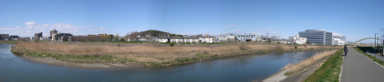

Panoramik Görüntü
Building Panoramic Images in The GIMP
Küçük resimlerinizden büyük bir panomara yaratmak çok zor bir iş değildir. GIMP programının eklentisi ya da Photoshop CS3 içindeki bir özellik bu sorunu kolaylaştırmaktadır.
Panoramik manzaralar çok hoş resimler oluşturmaktadır. Örnek bir resim bilgi için burada görüşlerinize sunulmuştur:

Software tools for creating panoramic images
Açık kaynak kodların en ünlüsü kuşkusuz Hugin adlı programdır. Hugin yazılımını kullanarak küçük resimlerden büyük bir bütün elde etmek ve daha çoğunu da yapmak mümkündür.
Hugin panorama üreten uygulamaların iyileri arasındadır. Asıl panoramik araçların yenileri üretilmiyor ama Hugin gibilerin türevleri üretilmektedir. Ayrıntılar için PanoTools wiki sayfalarına bakınız.
Bu uygulama ailesi tek seçiminiz olamaz. Eğer bazı Hugin seçeneklerini çok karmaşık buluyorsanız daha temel seçenekleri olan Enblend ile başlayabilirsiniz.
Enblend komut satırından çalışan araçlardan oluşur.
Mono kullanıcıları autopano-SIFT programını deneyebilirler. Scale-Invariant Feature Transform (SIFT) uygulamasıdır. SIFT'nin özelliği bir görüntünün ilginç özelliklerini ortaya çıkarır. Resimleri birbirlerine birleştirirken bu ilginç özellikler kontrol noktaları olur. Bu özellikler iki ya da daha çok yakın resmin sınır çizgisi olur öyle ki bu çizgilerden bağlanan resimler sürekli büyük resim oluşmasına yardımcı olur.
Eğer kontrol noktalarını kendiniz belirlemek isterseniz PanoPointsi yazılımını deneyin. Bir perl-GTK programı olarak sizin ilginç noktaları belirlemenizi bekler.
PanoPoints bazen otomatik iş yapan programlardan daha başarılı olabilir.
Sırada Steve Mann'nin araştırmacılarının ürünü VideoOrbits var. Bu araç beklenenin üstünde gelişti. Bütünleşik resimleri gerçeğe yakın sunmak için çok başarılı olmuştur.
Sanal Tur
VRbrochure FX Professional
elektronik broşürde sanal tur yaratmak, 3D objeler, fotograflar, slayt gösterileri, haritalar ve planlar ve sonra düzeltilebilir HTML tasarımlarına dönüştürülebilen java ya da flash görüntüler...
Flash Virtual Tour Software - Tourweaver
Tourweaver 3.00 flash sanal tur yazılımıdır. Bu yazılımla etkileşimli birçok planlarla 360 derecelik sanal tur görüntüleri elde edebilir, sıcak nokta, radar, yürüyüp gitme, ses, görüntü, dinamik yazı gibi eklentilerle ürünü süsleyebilirsiniz.
3Dvista virtual tour technology
Fotoğrafçılar, çoklu ortam WEB içerik hazırlayıcılar için bir sanal tur ürünüdür.